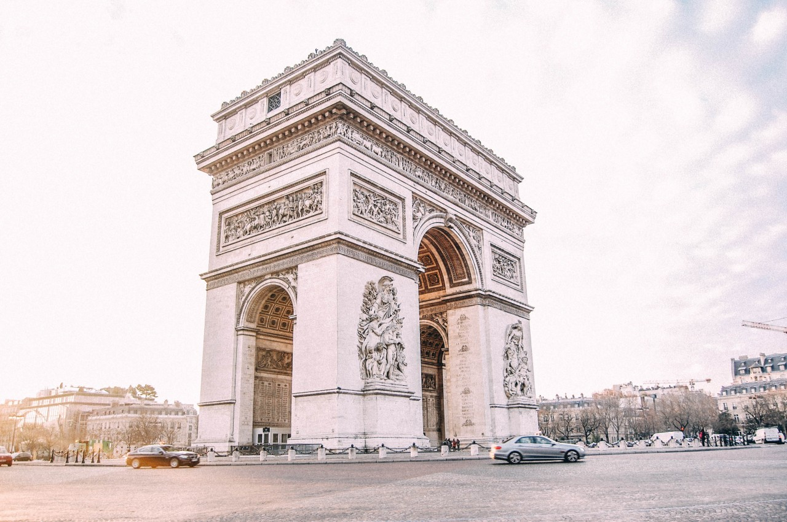

I’ll never forget my first time in Paris. It was mid-July and I was 25. I wasn’t as worried about skin cancer but I was concerned about lightening my hair and darkening my skin in the sun. I can’t tell you if Paris was hot or cold. I can’t tell you if it rained. All I know is that I loved it. I glided through the streets as if on pink roller skates, marveling at the beautiful buildings. People told me that Paris was dirty. Where? People told me that the French can be unfriendly. Who? But no one warned me that I would want to move abroad after visiting for just 5 days. That’s why I’ve put together the essential Paris travel guide. Because there are some things you MUST do when you go.
The Trocadéro is one of the best places for seeing the Iron Lady, or you can get up close and personal with her as well. I also suggest grabbing a bottle of wine or a pastry nearby. There will be people selling them for very reasonable pricing.
In order to get up to the Arc, take the underground passage so you can explore around it and climb up the 284 steps to the top. I think this is one of the best views in Paris.
Next, head over to one of my favorite spots, the Grand Palais. To me, this is quintessential Paris. One of the loveliest buildings in the world! Just on the other side, is the Petit Palais. I feel like these two buildings aren’t mentioned enough. They are exquisite and a testament to French architecture. Sometimes the line can be quite long, but they are lovely inside. The Grand Palais is a museum and exhibition hall, often with events taking place. The Petit Palais is an art museum, worth the look inside, as the whole building is art in itself.
From here, head over to the river Seine for a view of my favorite bridge in the world, the Pont Alexandre III.